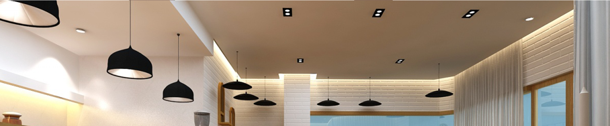
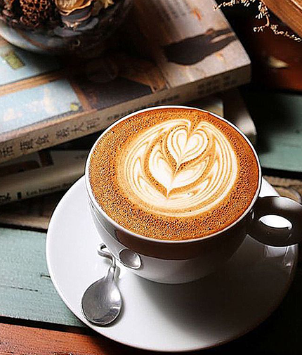

P roduct
产品介绍 Introduction

这是1683年的故事了。这一年,土耳其大军第二次进攻维也纳。当时的维也纳皇帝奥博德一世与波兰国王奥古斯都二二世订有攻守同盟, 波兰人只要得知这一消息,增援大军就会迅速赶到。但问题是,谁来突破土耳其人的重围去给波兰人送信呢?曾经在土耳其游历的维也纳人柯奇斯基自告奋勇,以流利的土耳其话骗过围城的土耳其军队,跨越多瑙河，搬来了波兰军队。
奥斯曼帝国的军队虽然骁勇善战,在波兰大军和维也纳大军的夹击下，还是仓皇退却了，走时在城外丢下了大批军需物资，其中就有数十麻袋的咖啡豆穆斯林世界控制了几个世纪不肯外流的咖啡豆,就这样轻而易举地到了维也纳人上。但是维也纳人不知道这是什么东西。只有柯奇斯基知道这是一 种神奇的饮料。于是他请求把这数 十麻袋咖啡豆作为突围求救的奖赏，并利用这些战利品在维也纳开设了一家咖啡馆--蓝瓶子。
开始的时候，咖啡馆的生意并不好。原因是欧洲人不像土耳其人那样,喜欢连咖啡渣一起喝下去。于是聪明的柯奇斯基改变了配方过滤掉咖啡渣并加入大量牛奶--这就是如今咖啡馆里常见的"拿铁"咖啡的原创版本。